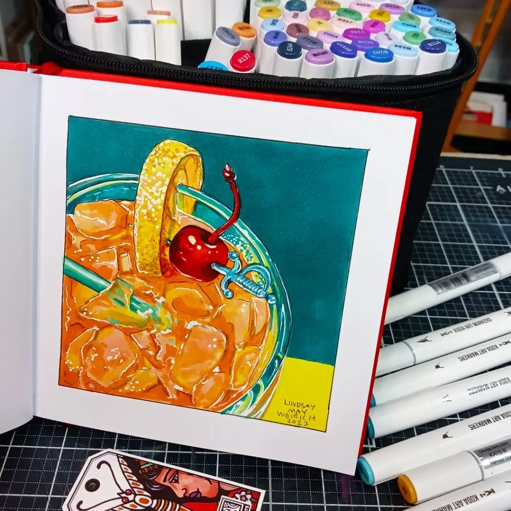

Acrylic paint is one of the first of many art forms you will learn about in your education. This is because acrylic paint is a versatile medium. You can layer acrylic paint, blend, and build on it. You can use acrylic paint in many different art styles because it is so flexible to work with. You can use brushes when using acrylic paint or palette knives to achieve a certain look you want. When choosing a palette to work with, you do not have to worry. When acrylic dries on hard surfaces such as plastic, you can simply peel it off. Acrylic paint can be used on canvas, certain pottery, multi-media paper, and almost anything your heart desires, as long as you seal it
Alcohol Markers
Alcohol markers are my personal favorite medium. Alcohol markers are one of the more laid-back mediums. There is no major preparation to use them. All you need is paper, alcohol markers, and an idea! Though they are just markers, they can achieve some amazing effects when used in certain ways. Layering different colors on top of each other can create realism if done correctly. They can be used to create a cartoon art style and much more!

Additonal Information On Acrylic Paint and Alcohol Markers
These are links to helpful websites that provide information on acrylic paint and alcohol markers.